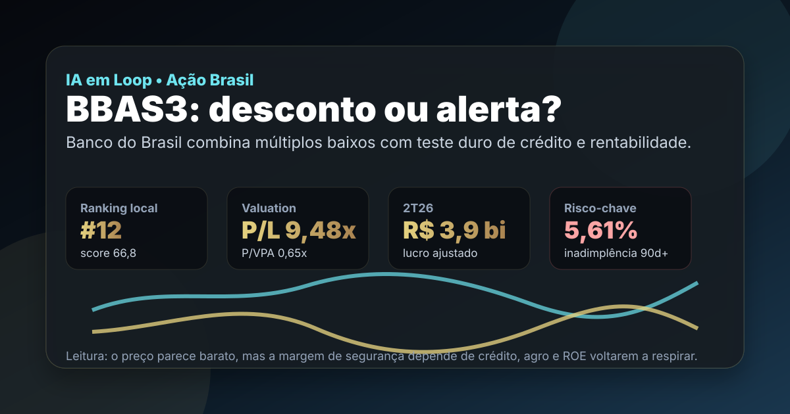

05/10: BBAS3, Banco do Brasil e o teste entre preço baixo e crédito
Banco do Brasil aparece barato em múltiplos, mas o mercado não está discutindo só preço: a pergunta central é se BBAS3 oferece margem de segurança suficiente enquanto lucro, inadimplência e agro pressionam a rentabilidade.

BBAS3 é um caso clássico de banco aparentemente barato: o múltiplo ajuda, mas o teste verdadeiro está na qualidade do crédito e na capacidade de recompor ROE.
Resposta curta: barato no múltiplo, mas ainda em prova de crédito
Na base local do ranking BESST Buffett B3 de agosto, BBAS3 aparece com preço-base de R$ 21,05, valor de mercado de aproximadamente R$ 120,2 bilhões, P/L de 9,48x, P/VPA de 0,65x, 20 anos listados, 19 anos com dividendos e score 66,8. O ponto fraco do filtro foi a remuneração: dividend yield de 1,14% naquela base, abaixo da régua estrita de dividendos.
O resultado recente explica por que o desconto existe. O Banco do Brasil reportou no 2T26 lucro líquido ajustado de R$ 3,9 bilhões, queda forte contra o ano anterior, ROE ajustado de 8,4% e inadimplência acima de 90 dias de 5,61%. A administração também revisou o guidance de 2026, colocando lucro ajustado em faixa menor, de R$ 18 bilhões a R$ 22 bilhões. Em banco, múltiplo baixo só vira oportunidade se o custo do risco parar de corroer lucro.
O que favorece BBAS3
O primeiro ponto favorável é escala. Banco do Brasil tem franquia nacional, base de clientes ampla, relacionamento com agronegócio, presença em crédito, cartões, seguros, previdência, investimentos e serviços. Essa capilaridade não desaparece em um trimestre ruim.
O segundo ponto é valuation. Um banco grande negociando abaixo do valor patrimonial chama atenção porque o mercado já embute parte do problema no preço. Se a inadimplência estabilizar, se o agro parar de surpreender negativamente e se o ROE voltar para dois dígitos saudáveis, o desconto pode fechar sem exigir uma tese heroica de crescimento.
| Métrica | Valor | Leitura |
|---|---|---|
| Preço-base local | R$ 21,05 | referência da base IA em Loop, não preço-alvo |
| P/VPA | 0,65x | mercado precifica risco no patrimônio |
| P/L | 9,48x | aparenta barato se lucro normalizar |
| Anos com dividendos | 19 | histórico longo, mas yield atual não sustentou filtro estrito |
| Setor | banco | escala e franquia importam, crédito decide |
O que ameaça a tese
O risco principal é crédito. O número de inadimplência acima de 90 dias em 5,61% mostra que a discussão saiu de “banco barato” para “quanto do lucro será consumido por provisões?”. Em Banco do Brasil, a exposição ao agronegócio é vantagem estrutural quando o ciclo está saudável, mas vira foco de atenção quando safra, preços, clima, renegociações e garantias entram em stress.
O segundo risco é rentabilidade. ROE ajustado de 8,4% é baixo para um banco grande, especialmente quando o investidor pode comparar BBAS3 com pares privados, renda fixa e outras ações brasileiras. Se o lucro ficar preso na parte baixa do guidance, o P/L barato pode ser só reflexo de lucro ainda pressionado, não margem de segurança.
BBAS3 merece watchlist porque o desconto é real, mas a tese só fica mais limpa quando inadimplência, provisões, lucro recorrente e ROE mostrarem estabilização. Antes disso, o preço baixo precisa ser lido junto com o risco de crédito.
Favoráveis e desfavoráveis
Favoráveis
• Banco de escala nacional, com franquia forte e histórico longo.
• P/VPA abaixo de 1x na base local.
• P/L abaixo de 10x se o lucro normalizar.
• Relação estrutural com agro pode voltar a ajudar em ciclo melhor.
• Score local alto mesmo fora do filtro estrito de dividendos.
Desfavoráveis
• Inadimplência de 90 dias elevada.
• Lucro ajustado caiu de forma relevante no 2T26.
• ROE ajustado ainda fraco para banco.
• Guidance reduzido diminui visibilidade.
• Dividend yield da base local ficou baixo para a régua de renda.
Checklist para acompanhar daqui em diante
| Ponto | O que monitorar | Se piorar |
|---|---|---|
| Inadimplência | NPL 90 dias, renegociações e carteira agro | provisões seguem consumindo lucro |
| ROE | retorno sobre patrimônio em base recorrente | P/VPA baixo pode continuar merecido |
| Margem financeira | spread, mix de crédito e custo de captação | lucro normalizado fica distante |
| Guidance | se lucro caminha para a faixa baixa ou alta | mercado revisa expectativa para baixo |
| Proventos | payout, JCP e dividendos futuros | tese de renda perde força |
Conclusão
A resposta para a pergunta do post é: BBAS3 parece barata, mas ainda não é uma tese limpa enquanto crédito e ROE não melhorarem. O desconto sobre patrimônio é atraente; a inadimplência elevada impede uma leitura automática de oportunidade.
Na régua do IA em Loop, Banco do Brasil é um bom estudo de banco cíclico com franquia forte. O investidor que olha apenas P/VPA pode comprar problema barato; o investidor que acompanha provisões, agro, ROE e guidance entende melhor quando o desconto vira assimetria e quando continua sendo prêmio pelo risco.